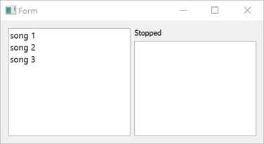

Qt SCXML Media Player Example (Static)
A widget-based application that sends data to and receives it from a compiled ECMAScript data model.

Media Player Example (Static) demonstrates how to access data from an ECMAScript data model that is compiled into a C++ class.
The UI is created using Qt Widgets.
Running the Example
To run the example from Qt Creator, open the Welcome mode and select the example from Examples. For more information, visit Building and Running an Example.
Using the ECMAScript Data Model
We specify the data model as a value of the datamodel attribute of the <scxml> element in mediaplayer-common/mediaplayer.scxml:
<scxml
xmlns="http://www.w3.org/2005/07/scxml"
version="1.0"
name="MediaPlayerStateMachine"
initial="stopped"
datamodel="ecmascript"
>
<datamodel>
<data id="media"/>
</datamodel>
Compiling the State Machine
We link against the Qt SCXML module by adding the following line to the .pro file:
QT += widgets scxml
We then specify the state machine to compile:
STATECHARTS = ../mediaplayer-common/mediaplayer.scxml
The Qt SCXML Compiler, qscxmlc, is run automatically to generate statemachine.h and statemachine.cpp, and to add them to the HEADERS and SOURCES variables for compilation.
Instantiating the State Machine
We instantiate the generated MediaPlayerStateMachine class in mediaplayer-widgets-static.cpp:
#include "mediaplayer.h" #include "../mediaplayer-common/mainwindow.h" #include <QApplication> int main(int argc, char **argv) { QApplication app(argc, argv); MediaPlayerStateMachine machine; MainWindow mainWindow(&machine);
Connecting to States
The media player state machine will send out events when users tap a control and when playback starts or stops, as specified in the SCXML file:
<state id="stopped">
<transition event="tap" cond="isValidMedia()" target="playing"/>
</state>
<state id="playing">
<onentry>
<assign location="media" expr="_event.data.media"/>
<send event="playbackStarted">
<param name="media" expr="media"/>
</send>
</onentry>
<onexit>
<send event="playbackStopped">
<param name="media" expr="media"/>
</send>
</onexit>
<transition event="tap" cond="!isValidMedia() || media === _event.data.media" target="stopped"/>
<transition event="tap" cond="isValidMedia() && media !== _event.data.media" target="playing"/>
</state>
To be notified when a state machine sends out an event, we connect to the corresponding signals:
stateMachine->connectToEvent("playbackStarted", this, &MainWindow::started);
stateMachine->connectToEvent("playbackStopped", this, &MainWindow::stopped);